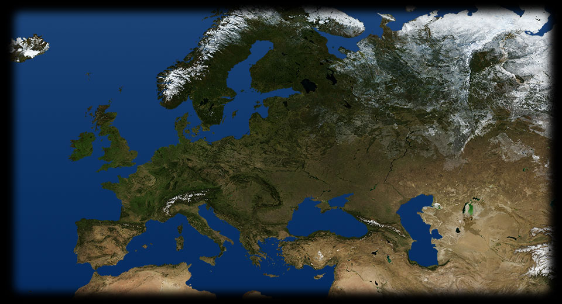
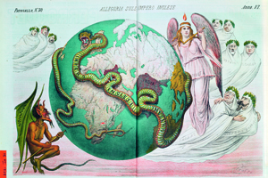

- 180 175
- 215 190
- 250 170
- 310 230
-

INGHILTERRA
Questa vignetta satirica italiana esprime con un'allegoria la preoccupazione delle nazioni europee per lo strapotere della potenza imperiale inglese. INGHILTERRA
Tutti i sudditi del Commonwealth britannico, indipendentemente dalle loro diverse etnie, sono invitati ad unirsi per partecipare allo sforzo bellico della Seconda guerra mondiale in questo manifesto di propaganda inglese del 1940.INGHILTERRA
Gran Bretagna e Francia hanno atteggiamenti diversi nei confronti dei movimenti indipendentisti che portano alla dissoluzione dei loro Imperi coloniali. I territori inglesi ottengono nella maggior parte dei casi l'indipendenza attraverso un processo di transizione pacifico, molte ex colonie entrano a far parte del Commonwealth, rimanendo sotto l'influenza britannica.FRANCIA
La Francia, che nei territori coloniali aveva attuato una politica di assimilazione, si oppone con forza alla dissoluzione del suo Impero coloniale. La transizione da colonie francesi a Stati indipendenti avviene con molte resistenze, l'indipendenza è ottenuta con la forza, conquistata a prezzo di violente e sanguinose guerre.